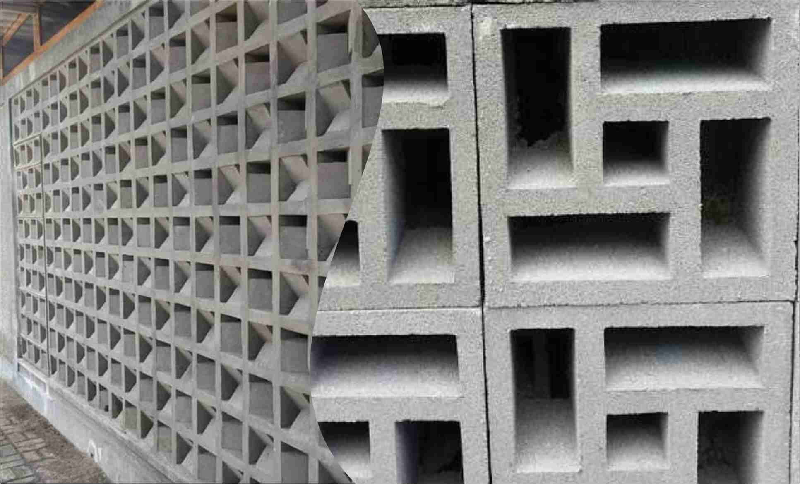
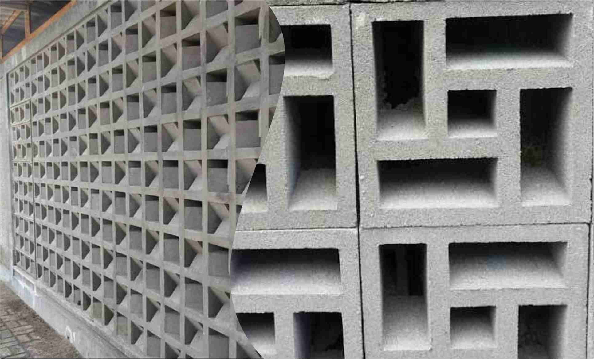

Inilah Pemeriksaan Fisik Per Sistem Tubuh yang Harus Diketahui
2021.03.24 18:32

Artikel Obat & Vitamin Tanya Dokter Rumah Sakit Cari Dokter Aplikasi LOGIN Coronavirus Diabetes Jantung Stroke Kehamilan Kolesterol Hipertensi Anemia Kanker Reproduksi Selengkapnya × Home Artikel Obat & Vitamin Tanya Dokter Rumah Sakit Cari Dokter Aplikasi Home / Artikel / Inilah Pemeriksaan Fisik Per Sistem Tubuh yang Harus Diketahui
Inilah Pemeriksaan Fisik Per Sistem Tubuh yang Harus Diketahui
Pemeriksaan Fisik Ditinjau oleh: dr. Rizal Fadli 01 April 2020Halodoc , Jakarta – Mengetahui kondisi tubuh, fisik, maupun organ dalam tubuh adalah hal yang penting, terutama setelah memasuki usia di atas 40 tahun. Tidak dapat dimungkiri, semakin bertambahnya usia, maka akan semakin menurun pula kemampuan fisik dan organ tubuh seseorang. Salah satu pemeriksaan tubuh yang penting dilakukan adalah pemeriksaan fisik per sistem tubuh yang mencakup pemeriksaan menyeluruh terhadap semua sistem, mulai dari evaluasi sistem jantung, diabetes, fungsi hati , penanda kanker, profil darah terperinci, profil lipid, pencitraan bidang-bidang utama dan konsultasi khusus yang terperinci.
Pemeriksaan kesehatan secara teratur dapat mengidentifikasi tanda-tanda awal munculnya masalah kesehatan. Menemukan masalah sejak dini berarti peluang kamu untuk perawatan yang efektif dan kemungkinan kesembuhan meningkat. Ada beberapa faktor yang bisa dijadikan petunjuk, seberapa sering kamu perlu melakukan pemeriksaan, di antaranya faktor usia, kesehatan, riwayat keluarga, dan pilihan gaya hidup. Biar lebih jelas, simak pembahasan seputar manfaat pemeriksaan fisik berikut!
Baca Juga: Cari Tahu Tentang Stem Cells untuk Sembuhkan Kanker
Mengenal Lebih Jauh Pemeriksaan Fisik
Biasanya, pemeriksaan ini memberikan penilaian terperinci tentang status vaskular jantung. Pemeriksaan kesehatan ini juga memberikan penilaian komprehensif tentang status kesehatan individu dan disarankan terutama bagi mereka yang berusia lebih dari 40 tahun.
Terdapat empat cara yang dilakukan pada tiap pemeriksaan fisik yang dilakukan, yaitu:
Inspeksi. Tahapan yang bertujuan melihat bagian tubuh dan menentukan apakah seseorang mengalami kondisi tubuh normal atau abnormal. Inspeksi dilakukan secara langsung (seperti penglihatan, pendengaran, dan penciuman) dan tidak langsung (dengan alat bantu). Palpasi. Pemeriksaan fisik lanjutan dengan menyentuh tubuh dan dilakukan bersamaan dengan inspeksi. Palpasi dilakukan menggunakan telapak tangan, jari, dan ujung jari. Tujuannya untuk mengecek kelembutan, kekakuan, massa, suhu, posisi, ukuran, kecepatan, dan kualitas nadi perifer pada tubuh. Auskultasi. Proses mendengarkan suara yang dihasilkan tubuh untuk membedakan suara normal dan abnormal menggunakan alat bantu stetoskop. Suara yang didengarkan berasal dari sistem kardiovaskuler, respirasi, dan gastrointestinal. Perkusi. Tahapan ini bertujuan mengetahui bentuk, lokasi, dan struktur di bawa kulit. Perkusi bisa dilakukan secara langsung dan tidak langsung.Baca Juga: 7 Pemeriksaan Fisik yang Biasa Dilakukan Sebelum Masuk Sekolah Militer
Apa Tujuan Melakukan Pemeriksaan Fisik Secara Rutin?
Pemeriksaan rutin ke dokter secara teratur adalah hal yang disarankan. Meskipun kamu sedang tidak merasa sakit. Tujuan dari kunjungan ini antara lain:
Memeriksakan masalah medis yang muncul saat ini. Menilai risiko kondisi medis kamu di masa yang akan datang. Menilai apakah pola hidup yang tengah dijalani sudah tergolong sehat atau tidak. Memperbarui vaksinasi .Pemeriksaan kesehatan biasanya dimasukkan ke dalam perawatan medis rutin. Dokter sering melakukan pemeriksaan ini ketika kamu mengunjungi untuk kondisi lain, seperti pilek atau masalah lain. Lalu, dokter memberi tahu seberapa sering kamu perlu melakukan pemeriksaan kesehatan. Melakukan pemeriksaan kesehatan medis ini bisa menjadi waktu untuk berdiskusi dengan profesional kesehatan.
Pemeriksaan fisik adalah bagian penting dari sebuah rangkaian yang memanjang dari sejarah penyakit hingga penentuan jenis metode pengobatan dan hasil terapeutik. Jika anamnesis dan pemeriksaan fisik dihubungkan dengan baik oleh kemampuan penalaran dokter, tes laboratorium biasanya diwajibkan untuk dilakukan.
Baca Juga: Ini Bedanya Pemeriksaan Fisik Tanda Vital dan Pemeriksaan Per Sistem Tubuh
Jika sewaktu-waktu kamu ingin mengetahui lebih banyak mengenai pemeriksaan fisik per sistem tubuh, kamu bisa tanyakan langsung ke Halodoc . Dokter-dokter yang ahli di bidangnya akan berusaha memberikan solusi terbaik untukmu. Caranya, cukup download aplikasi Halodoc lewat Google Play atau App Store. Lebih mudah menghubungi dokter melalui Video/Voice Call atau Chat kapan dan di mana saja.
Referensi:
Healthline. Diakses pada 2020. Physical Examination.
Web MD. Diakses pada 2020. Annual Physical Examinations.
Artikel Terkait
Ini Bedanya Pemeriksaan Fisik Tanda Vital dan Pemeriksaan Per Sistem Tubuh MSCT Lebih Canggih dari CT Scan? Deteksi Penyakit, Kenali Lebih Dalam Radiologi Diagnostik Kapan Waktu Ideal untuk Melakukan Tes USG saat Hamil? Alasan Gangguan Kemih Perlu Lakukan Pemeriksaan UroflowmetriKonsultasi lebih lanjut dengan ahlinya
Chat dengan
Dokter Umum
CHAT SEKARANG
- 7 Tujuan Utama Latihan Kondisi Fisik Penting Dilakukan
- Fizik SPM 2016 (Sebenar)
- Sports - Fisik
- Cara Mengisi Ciri Fisik Skck Online - SKCK
- (DOC) . PETUNJUK TEKNIS PENGUKURAN REALISASI FISIK ...
- Fisik Motorik | perdaniseptianarahayu1001110042
- Gelombang (Fizik T5) - SlideShare
- FIZIK 4531 Oktober 2020
- PEMERIKSAAN FISIK BAYI BARU LAHIR - WordPress.com
- Kondisi fisik wilayah 1 dataran rendah 2 curah hujan ...
- 7 Tujuan Utama Latihan Kondisi Fisik Penting Dilakukan
Kondisi fisik wilayah: (1) dataran rendah; (2) curah hujan tinggi; (3) merupakan daerah aliran sungai. Penggunaan wilayah sesuai kondisi fisik tersebut adalah sebagai daerah .... A. perkebunan B. pertanian C. waduk irigasi D. pembangkit listrik E. industri pemintalan 39. Perhatikan karakteristik negara berikut! 1) Pendapatan perkapita tinggi.
- Fizik SPM 2016 (Sebenar)
Teknik pemeriksaan fisik dada terbagi menjadi empat, yaitu inspeksi, palpasi, perkusi, dan auskultasi. Pemeriksaan ini sederhana dan cukup mudah dilakukan tanpa menimbulkan komplikasi. Pemeriksaan fisik dada
- Sports - Fisik
SULIT SMK Khir Johari SULIT 3 Section A Bahagian A [60 marks] [60 markah] Answer all questions in this section. Jawab semua soalan dalam bahagian ini. 1 Diagram 1.1 shows a liquid-in-glass thermometer. Rajah 1.1 menunjukkan satu termometer cecair-dalam–kaca. DIAGRAM 1.1
- Cara Mengisi Ciri Fisik Skck Online - SKCK
Keadaan fisik dari klien wajib diketahui dan dikaji oleh perawat / bidan maupun tenaga kesehatan lainnyayang memberikan asuhan. Anamnesa dan pemeriksaan fisik merupakan salah satu data penunjang dan mengetahui masalah apa yang dialami oleh klien agar diagnosa dapat ditegakkan. A.
- (DOC) . PETUNJUK TEKNIS PENGUKURAN REALISASI FISIK ...
Fizik SPM 2016 (Sebenar) - Free download as Powerpoint Presentation (.ppt / .pptx), PDF File (.pdf) or view presentation slides online. fz
- Fisik Motorik | perdaniseptianarahayu1001110042
SULIT 6 4531 ©Hak Cipta MPSM Negeri Perlis [Lihat sebelah SULIT 6 (a) Current produced when there is a relative motion between the
- Gelombang (Fizik T5) - SlideShare
Perkembangan fisik manusia meliputi berbagai aspek yang dipengaruhi sistem dan fungsi organ tubuh. Sistem syaraf yang sangat mempengaruhi perkembangan kecerdasan dan emosi. Sistem tulang dan otot-otot yang mempengaruhi perkembangan kekuatan dan kemampuan motorik. Sistem hormonal atau endokrin, yang menyebabkan munculnya pola-pola tingkah laku ...
- FIZIK 4531 Oktober 2020
Halodoc, Jakarta - Tentara adalah salah satu pekerjaan yang harus ditunjang oleh fisik yang prima.Cara bergabung ke sekolah militer dan menjadi tentara adalah melalui Seleksi Akademi Militer. Pada seleksi tersebut, terdapat beberapa tes yang akan dilakukan, salah satunya adalah tes fisik.Walau begitu, fisik bukan satu-satunya hal yang akan diukur.
- PEMERIKSAAN FISIK BAYI BARU LAHIR - WordPress.com
Pengukuran realisasi fisik dan non fisik kegiatan secara umum adalah kegiatan penetapan progres pekerjaan berdasarkan kemajuan pekerjaan. Pengukuran dilakukan dari a. Tujuan, Pernyataan sederhana yang jelas tentang dampak atau hasil yang akan dicapai oleh proyek b. Hasil, Tetapkan perubahan tingkat penerima dan populasi yang dibutuhkan untuk ...
- Kondisi fisik wilayah 1 dataran rendah 2 curah hujan ...
2. Geografi fisik. Geografi fisik adalah salah satu bentuk dari fenomena yang ada di permukaan bumi dengan proses terhadap penekanan geografis dan akan menjadi dasar kehidupan manusia, diantaranya adalah. Studi geologi – adalah salah satu masalah tentang bagaimana bumi telah terbentuk dan akan mengalami perubahan dengan seiring berjalannya waktu.
Kondisi fisik wilayah: (1) dataran rendah; (2) curah hujan tinggi; (3) merupakan daerah aliran sungai. Penggunaan wilayah sesuai kondisi fisik tersebut adalah sebagai daerah .... A. perkebunan B. pertanian C. waduk irigasi D. pembangkit listrik E. industri pemintalan 39. Perhatikan karakteristik negara berikut! 1) Pendapatan perkapita tinggi.
Teknik pemeriksaan fisik dada terbagi menjadi empat, yaitu inspeksi, palpasi, perkusi, dan auskultasi. Pemeriksaan ini sederhana dan cukup mudah dilakukan tanpa menimbulkan komplikasi. Pemeriksaan fisik dada
SULIT SMK Khir Johari SULIT 3 Section A Bahagian A [60 marks] [60 markah] Answer all questions in this section. Jawab semua soalan dalam bahagian ini. 1 Diagram 1.1 shows a liquid-in-glass thermometer. Rajah 1.1 menunjukkan satu termometer cecair-dalam–kaca. DIAGRAM 1.1
Keadaan fisik dari klien wajib diketahui dan dikaji oleh perawat / bidan maupun tenaga kesehatan lainnyayang memberikan asuhan. Anamnesa dan pemeriksaan fisik merupakan salah satu data penunjang dan mengetahui masalah apa yang dialami oleh klien agar diagnosa dapat ditegakkan. A.
Fizik SPM 2016 (Sebenar) - Free download as Powerpoint Presentation (.ppt / .pptx), PDF File (.pdf) or view presentation slides online. fz
SULIT 6 4531 ©Hak Cipta MPSM Negeri Perlis [Lihat sebelah SULIT 6 (a) Current produced when there is a relative motion between the
Perkembangan fisik manusia meliputi berbagai aspek yang dipengaruhi sistem dan fungsi organ tubuh. Sistem syaraf yang sangat mempengaruhi perkembangan kecerdasan dan emosi. Sistem tulang dan otot-otot yang mempengaruhi perkembangan kekuatan dan kemampuan motorik. Sistem hormonal atau endokrin, yang menyebabkan munculnya pola-pola tingkah laku ...
Halodoc, Jakarta - Tentara adalah salah satu pekerjaan yang harus ditunjang oleh fisik yang prima.Cara bergabung ke sekolah militer dan menjadi tentara adalah melalui Seleksi Akademi Militer. Pada seleksi tersebut, terdapat beberapa tes yang akan dilakukan, salah satunya adalah tes fisik.Walau begitu, fisik bukan satu-satunya hal yang akan diukur.
Pengukuran realisasi fisik dan non fisik kegiatan secara umum adalah kegiatan penetapan progres pekerjaan berdasarkan kemajuan pekerjaan. Pengukuran dilakukan dari a. Tujuan, Pernyataan sederhana yang jelas tentang dampak atau hasil yang akan dicapai oleh proyek b. Hasil, Tetapkan perubahan tingkat penerima dan populasi yang dibutuhkan untuk ...
2. Geografi fisik. Geografi fisik adalah salah satu bentuk dari fenomena yang ada di permukaan bumi dengan proses terhadap penekanan geografis dan akan menjadi dasar kehidupan manusia, diantaranya adalah. Studi geologi – adalah salah satu masalah tentang bagaimana bumi telah terbentuk dan akan mengalami perubahan dengan seiring berjalannya waktu.
 
